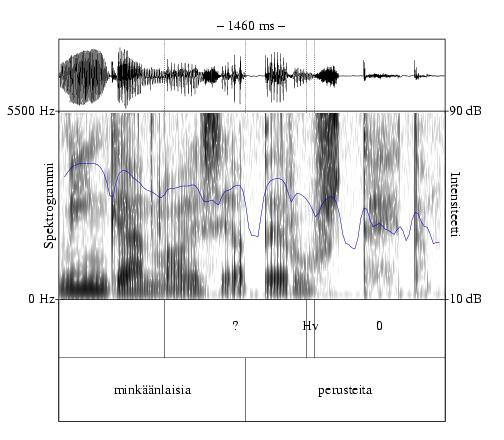

Äänenlaatukerrokseen merkitään puhujan äänenlaadun muutokset, esim. kuiskaus/ soinnittomuus, narina tai henkäyssointi. Modaaliääntä ("tavallista äänenlaatua") ei tarvitse merkitä erikseen -- jos äänenlaatukerroksessa ei ole tietyllä ajanhetkellä merkintää, se tarkoittaa, että puhe on normaalisti soinnillista tai soinnitonta sen mukaan, mikä äänne (sll/ston) foonitasolle on ko. ajanhetken kohdalle merkitty (ks. kuva 3.1).
|

|
Äänenlaatuilmiöiden luokittelu on vaikeaa, sillä äänenlaatua kuvaavat, usein impressionistiset termit ymmärretään eri tavoin. Tutkimuksissa onkin todettu, että ihmiset kykenevät tunnistamaan melko johdonmukaisesti lähinnä jonkinlaisen narinaäänen (11). Siksi tässäkään oppaassa ei ole valmiiksi määritelty kovin monia äänenlaatutyyppejä. Oikeastaan äänenlaadun tarkka tutkiminen vaatisikin tarkkoja fysiologisia ja akustisia mittauksia, joita annotoija ei käytännössä voi soveltaa jo tallennettuun puhesignaaliin.
Äänenlaatu ei välttämättä ole riippuvainen mistään muusta yksiköstä vaan äänenlaatu voi ainakin teoriassa muuttua hyvinkin hienojakoisesti vaikkapa keskellä äänneyksikköä. Tästä syystä eri äänenlaatukerrokset voidaan periaatteessa nimikoida ilman muita annotaatiokerroksia. Käytännössä äänenlaadun annotointi on kuitenkin helpompaa, jos aineistosta on tarjolla vaikkapa puhunnoskerros litteraatteineen.
Kuiskausääni on useiden äänteiden yli jatkuvaa soinnitonta puhetta, jossa ei ole nähtävissä yksittäisiä äänihuuliperiodeja. Yksikköä voidaan kuitenkin käyttää myös, jos vain yksi äänne on soinniton (esim. puhunnoksenloppuinen vokaali), mikäli soinnittomuutta ei haluta tai voida kuvata soinnittomuuden tarkemerkillä äännekerroksen (9) vastaavassa yksikössä.
Kuiskaukseksi tai soinnittomalla äänenlaadulla tuotetuksi merkitään sellainen puheen osa, jossa yksi tai useampi äänne on odotusten vastaisesti soinniton. Kuiskaus voi alkaa tai päättyä myös keskellä äännettä. Esimerkiksi vokaalin alkuosa voi olla soinnillinen ja loppuosa soinniton. Tämä on yleistä etenkin puhunnoksen lopussa esiintyvillä vokaaleilla.
Puh-editorissa kuiskausyksikölle ei merkitä erillistä kuvausta. Jos nimikoidaan esimerkiksi Praat-ohjelmalla, tulisi kuiskattu jakso merkitä soinnittomuuden merkillä 0.
Henkäyssoinnillinen äänenlaatu. Osittain tai heikosti soinnillinen, puoliksi kuiskaava äänenlaatu, jossa on mukana hälyä.
Henkäyssointia esiintyy usein esim. soinnittomien frikatiiviäänteiden vieressä, puhunnosten lopussa ja aivan narinaäänen vieressä. Puhe kuulostaa h-väritteiseltä, muttei ole kuitenkaan täydellistä kuiskausta vaan sisältää heikkoa sointia. Spektrogrammissa voidaan mahdollisesti erottaa jonkinlaista hälyä, puheen kokonaisenergia on vähäisempi ja aaltomuodosta katsottuna myös amplitudi on usein ympäristöä pienempi.
Puh-editorissa henkäyssointiyksikölle ei merkitä erillistä kuvausta. Jos nimikoidaan esimerkiksi Praat-ohjelmalla, tulisi henkäyssoinnillinen jakso merkitä henkäyssoinnin Worldbet-merkillä Hv.
Nariseva äänenlaatu. Puhujan tuottamaa sointia, jonka äänihuuliperiodit ovat normaalia pitempiä ja/tai epäsäännöllisiä. Narinaa esiintyy usein erilaisten prosodisten rajakohtien yhteydessä, ja joillakin puhujilla myös laajemmin. On olemassa erilaisia narisevia äänenlaatuja, mutta tämä yksikkö kuvaa niitä yhteisesti.
Aaltomuodossa soinnillisten äänteiden aikana näkyvät periodit ovat epäsäännöllisiä ja/tai normaalia pitempiä. Joskus narinan aaltomuodossa erottuu kahden hieman erilaisen periodin vuorottelua (tätä kutsutaan diplofoniaksi).
Puh-editorissa narinayksikölle ei merkitä erillistä kuvausta. Jos nimikoidaan esimerkiksi Praat-ohjelmalla, tulisi nariseva jakso merkitä narinan/glottalisaation Worldbet-merkillä ?.
Jos halutaan erottaa useampia narinatyyppejä, tästä yksiköstä on mahdollista Puh-editorilla periyttää aliyksikkö, jolle sitten määritellään uusia ominaisuuksia (esim. ominaisuus creakType, jolla on joukko haluttuja arvoja, esim. 1 - määrittelemätön, 2 - puristeinen ääni, 3 - diplofonia, 4 - ''vantaalaisnarina'' tms.)
Korkea äänentuoton rekisteri. Falsettiääntä voi esiintyä vaikkapa referoinnin yhteydessä, esim. kun miespuhuja matkii naisen puhetta.
Falsetti voidaan erottaa kuulonvaraisesti ja usein huomattavasti tavanomaista korkeamman perustaajuuden (eri ohjelmissa F0- eli Pitch-käyrä) avulla. Pelkkään perustaajuuskäyrään ei kannata luottaa, sillä joissakin tapauksissa perustaajuusanalyysi voi tuottaa käyrän, joka näyttää arvoja oktaavia korkeammalta kuin pitäisi (tähän voivat vaikuttaa esim. epähuomiossa naispuhujan puheelle säädetyt perustaajuusanalyysin asetukset, vaikka puhujana olisi mies).
Puh-editorissa falsettiyksikölle ei merkitä erillistä kuvausta. Jos nimikoidaan esimerkiksi Praat-ohjelmalla, tulisi falsetissa tuotettu puheen jakso merkitä merkillä F.